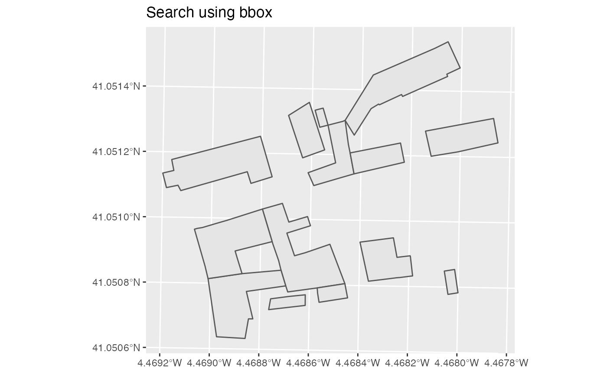
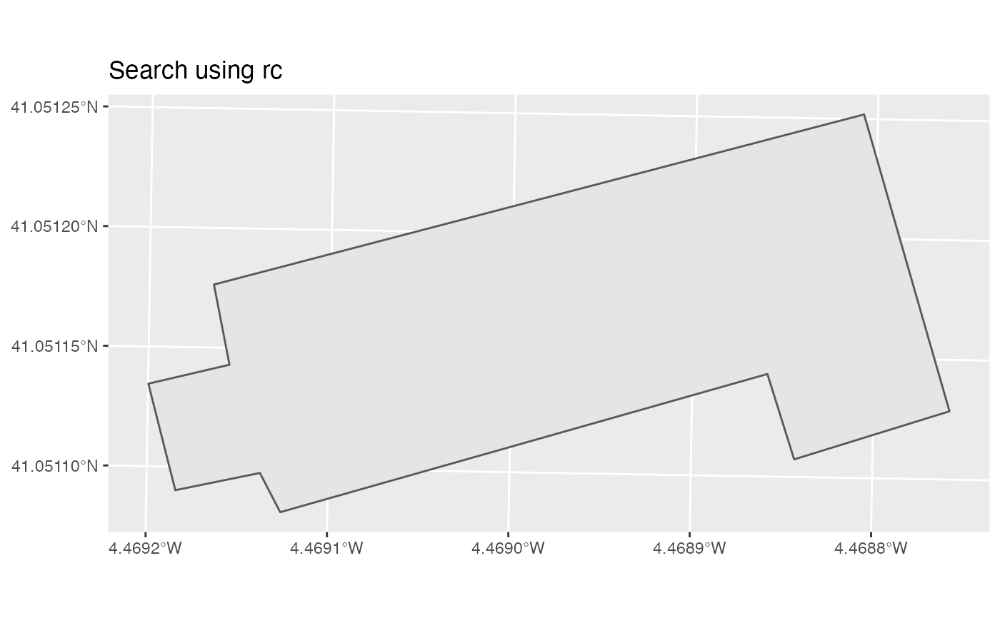

Get the spatial data of buildings. The WFS Service allows to perform two types of queries:
By bounding box: Implemented on
catr_wfs_bu_bbox(). Extract objects included on the bounding box provided. See Details.
By cadastral reference: Implemented on
catr_wfs_bu_rc(). Extract objects of specific cadastral references.
Check the API Docs.
Usage
catr_wfs_bu_bbox(bbox, what = "building", srs, verbose = FALSE)
catr_wfs_bu_rc(rc, what = "building", srs = NULL, verbose = FALSE)Arguments
- bbox
A numeric vector of length 4 with the coordinates that defines the bounding box:
c(xmin, ymin, xmax, ymax)or asf/sfcobject, as provided by the sf package.- what
Information to load. It could be
"building"for buildings,"buildingpart"for parts of a building or"other"for others ( swimming pools, etc.).- srs
SRS/CRS to use on the query. To check the admitted values check catr_srs_values, specifically the
wfs_servicecolumn. See Details.- verbose
Logical, displays information. Useful for debugging, default is
FALSE.- rc
The cadastral reference to be extracted.
Details
When bbox is a numeric vector, make sure that the srs matches the
coordinate values. Additionally, when the srs correspond to a geographic
reference system (4326, 4258), the function queries the bounding box on
EPSG:3857 - Web Mercator, to overcome
a potential bug on the API side.
When bbox is a sf object, the value srs is ignored. In this case, the
bounding box of the sf object would be used for the query (see
sf::st_bbox()). The query is performed using
EPSG:3857 (Web Mercator). The result is provided
always in the SRS of the sf object provided as input.
See also
INSPIRE API functions:
catr_atom_ad_db_all(),
catr_atom_ad(),
catr_atom_bu_db_all(),
catr_atom_bu(),
catr_atom_cp_db_all(),
catr_atom_cp(),
catr_wfs_ad_bbox()
Other INSPIRE WFS services:
catr_srs_values,
catr_wfs_ad_bbox()
Other buildings:
catr_atom_bu_db_all(),
catr_atom_bu()
Other spatial:
catr_atom_ad(),
catr_atom_bu(),
catr_atom_cp(),
catr_wfs_ad_bbox()
Examples
# \donttest{
# Using bbox
building <- catr_wfs_bu_bbox(c(
376550,
4545424,
376600,
4545474
),
srs = 25830
)
library(ggplot2)
ggplot(building) +
geom_sf() +
labs(title = "Search using bbox")

# Using rc
rc <- catr_wfs_bu_rc("6656601UL7465N")
library(ggplot2)
ggplot(rc) +
geom_sf() +
labs(title = "Search using rc")

# }